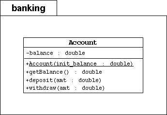

SL275: Module2: Object-Oriented Programming
Exercise #3: Create a Simple Banking Package
(level 2)
Objective
This exercise will introduce you to the banking project which we will
return to in several labs up to Module 9. This project will (eventually)
consist of a bank with several customers with several account each and a report.
These classes will evolve over the next eight modules.
In this exercise, you will create very simple version of the Account
class. You will place this source file in the banking package.
A test program, TestBanking, has been written in the default package that creates
a single account. It initializes the balance of that account and performs
several simple transactions. Finally, the test program displays the final
balance of the account.

Directions
- Create the banking directory. Use a command such as:
mkdir banking
- Create the Account class in the file Account.java
under the banking directory. This class must implement the
model in the above UML diagram.
- declare one private object attribute: balance; this attribute will hold
the current (or "running") balance of the bank account
- declare a public constructor that takes one parameter (init_balance);
that populates the balance attribute
- declare a public method getBalance that retrieves the current balance
- declare a public method deposit that adds the amount parameter to the current balance
- declare a public method withdraw that removes the amount parameter
from the current balance
- In the main exercise3 directory, compile the TestBanking.java
file. This has a cascading effect of compiling all of the classes used
in the program; thus compiling the Account.java
file under the banking directory.
javac -d . TestBanking.java
- Run the TestBanking class. You shoud see the following output:
Creating an account with a 500.00 balance.
Withdraw 150.00
Deposit 22.50
Withdraw 47.62
The account has a balance of 324.88